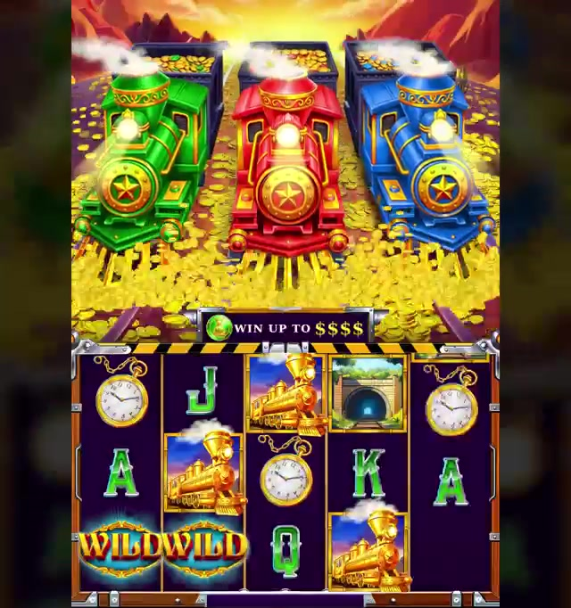
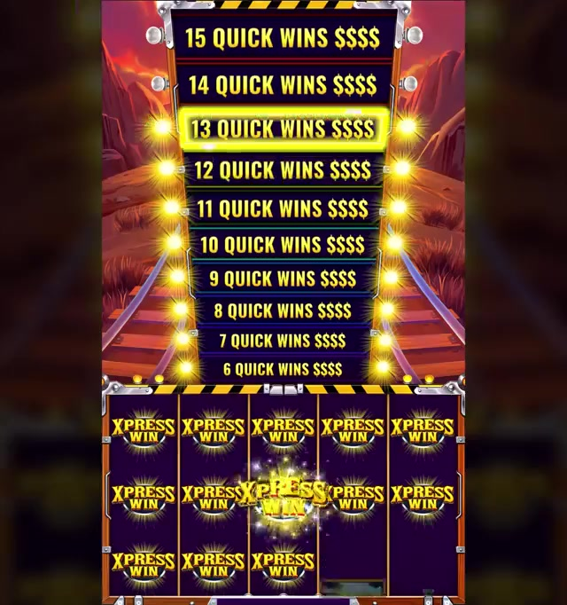
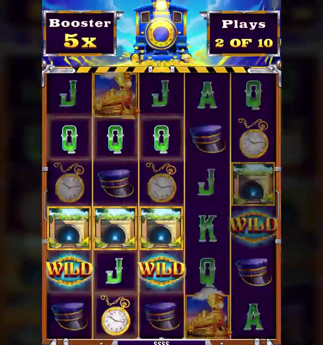
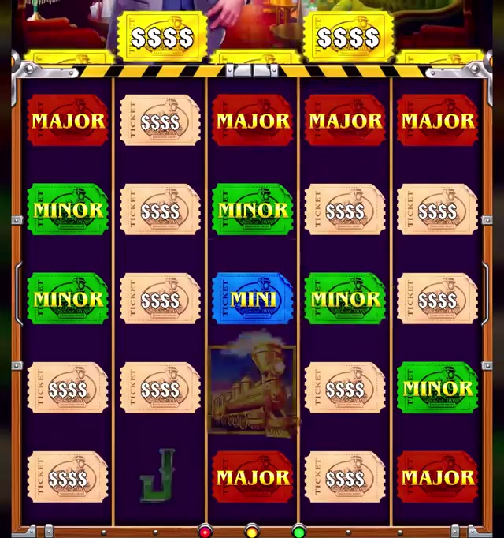

← Client projects / Xpress Riches
Land-based slot · Pilot Games · 2025
Xpress Riches
Progress that feels faster than the count.
Pilot GamesNorth Dakota, USPerceived PersistenceHold & Respin + Quick Hit
Concept
A gold-rush locomotive theme for land-based cabinets, powered by a Perceived Persistence mechanic that makes collector progress feel more responsive and immediate than a strict count would allow, paired with combined Hold & Respin and Quick Hit bonus rounds for a faster, higher-frequency payoff rhythm suited to the North Dakota floor.
My role
I was the principal designer on Xpress Riches, from the first feature idea through documentation, quality assurance and final delivery.
- Concept. Led theme and feature ideation from the first idea to a clear design direction.
- Design documentation. Wrote the complete design documentation that art, development and QA built from: feature specifications, game flow and UI/UX flows.
- Production support. Worked with developers, artists and balancing specialists through production to keep the design intent intact. Tuned how the headline feature feels to the player together with the balancing team.
- Quality. Ran quality checks on builds throughout development and checked the game against the design.
- Delivery. Carried quality assurance across build iterations and through final delivery.
- Audience. Designed for the land-based cabinet player in the North Dakota market, where a game has to hold attention on a physical floor.
PublisherPilot Games
Year2025
MarketNorth Dakota, US
TypeLand-based cabinet
PhaseFull design
Key featurePerceived Persistence
BonusHold & Respin + Quick Hit
All design and development rights reserved to Pilot Games.
Gameplay
Gameplay captures
Screens from the gameplay recording.



